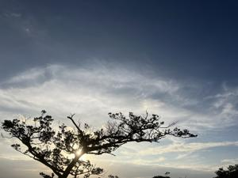

うるがいの話 ある日
最新: 猩紅熱【うるがいの話 ある日】とは 一日だけのプログです
『うるがいの話』の最新一日だけのプログで、通信料が少なく経済的だ。カニの画像をクリックすると全ての日付が載る『うるがいの話』サイトを表示します
|
|
【うるがいの話】 うるがい(ｳﾙｶﾞｲ urugai)とは、『もずくがに』の名前でとても大きくなります。 |
|---|---|
|
|
【カミマヤーの話】 猫のことを方言でマヤーといいます。カミマヤー（kamimayaa）とは、神の猫のことです。 |
|
【たながぁの音楽】 たながぁ（ﾀﾅｶﾞｰ tanagaa）とは手長えびのことで、何種類かあり大きいのは車 エビぐらいになります。 |

|
【ぶながぁの話】 ぶながぁ(ﾌﾞﾅｶﾞｰ bunagaa)とは、赤い髪の毛、赤い身体、そして身長は１ｍ２０ｃｍ ぐらい、川の蟹を食べているの目撃された。場所は沖縄県国頭郡大宜味村のと ある村僕の隣近所に住んでいる爺さんから、聞いた話です。 |
|
|
【ギーマの話】 ギーマ(giima)とは、山原の里山に咲くスズランに似た、 花を付けます。実は食べられます、 気が付くと口の周りが紫になっています。 |
2024年09月26日 (木）猩紅熱
16:03

読めん、エジソンの伝記（英語）を読んでいるとエジソンが幼い頃、『ｓ
ｃａｒｌｅｔ ｆｅｖｅｒ』という病気にかかったとあった。フーン、ど
れ日本語訳はと、本の後ろにある単語の日本語をみる。『猩紅熱』だけ他
に説明がない！、？読めなかった。
猩紅熱（しょうこうねつ、英：ｓｃａｒｌｅｔ ｆｅｖｅｒ）は、小児に
多い発疹性感染症。明治年間に法定伝染病に指定され恐れられていた病気
の一つだが、抗生物質の開発により、治療が容易になった。このため１９
９８年の法改正に伴い、法定伝染病（届け出が必要）ではなくなった。
なるほど、そして
When journalists visited Menlo Park, they called it
"the laboratory that never sleeps.'
（ジャーナリストたちがメンロパークを訪れたとき、彼らはそこを「眠ら
ない実験室」と呼んだ。）
確かどこかの職場が、「不夜城」（真夜中でも、こうこうとした電灯の光
が窓から漏れる）がそうだった。貫徹 （「完全徹夜」の略 夜間、一睡も
せずに過ごすこと。）も当たり前だった。そういえば、４月のとあるプロ
ジェクトは、その気配があった。
１５時５０分 ビットコインの総資産 ￥２６、７６１（↑１０９）